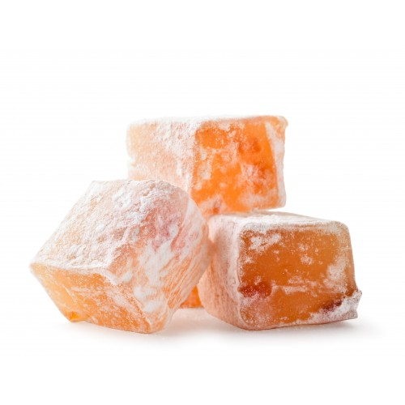

Orange Lukumi

Description
A melt in your mouth confection, the traditional Orange Turkish Delight (Orange Lokum). This gelatin-free and naturally coloured recipe is prepared with very few classic ingredients.
Ingredients for sugar syrup
- Sugar - 4 cups
- Water - 1 1/2 cup
- Lemon
- Orange Zest - 2 tbsp
Ingredients for lukum
- Cornstarch - 1 cup
- Orange juice - 1 cup
- Water - 2 cup
- Vinegar - 1 tbsp
Steps
- Add everything to a pan and boil it till it becomes thick.
- Mix all together and cook for 45 minutes.
- Pour it to a greased bowl and set it for 6 hours.
Back to Main